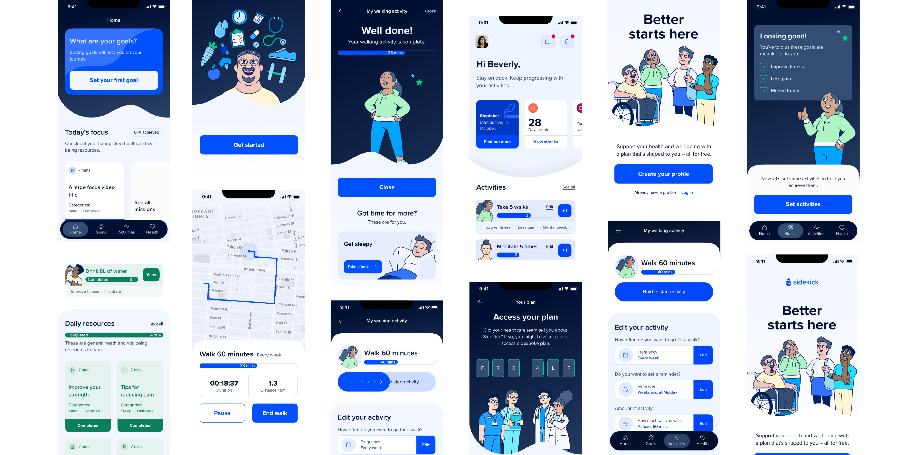
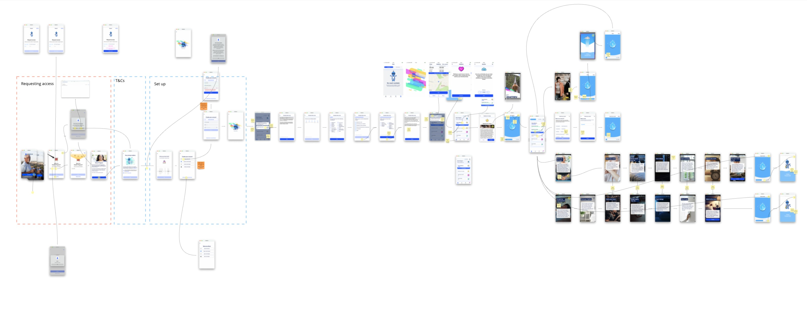
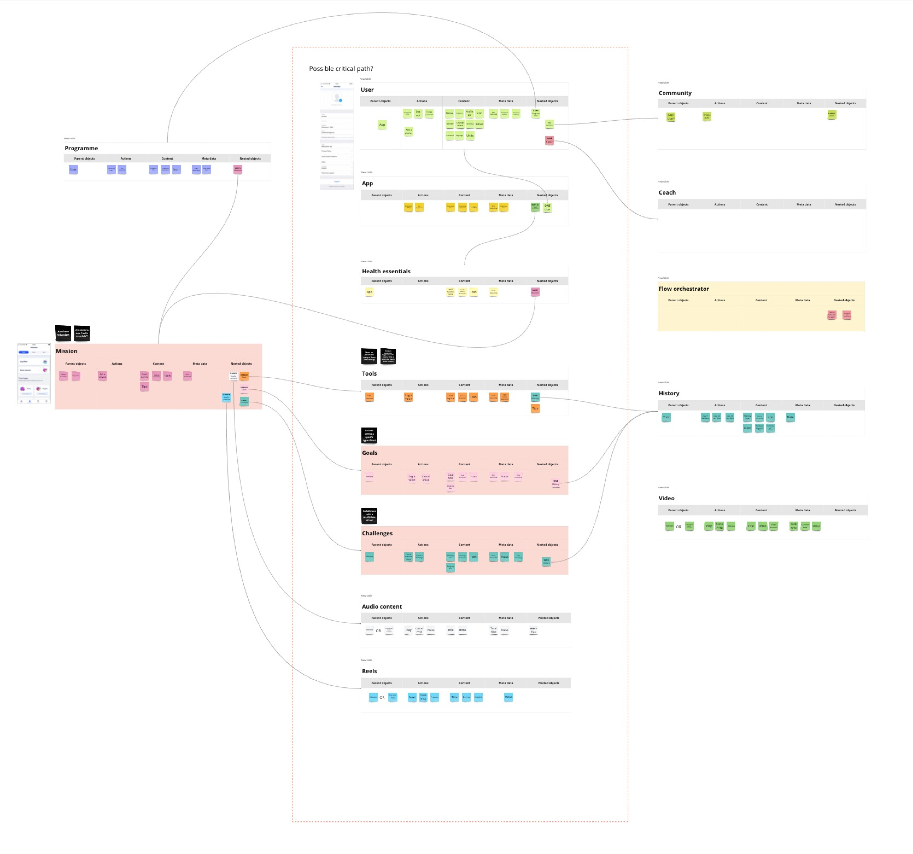
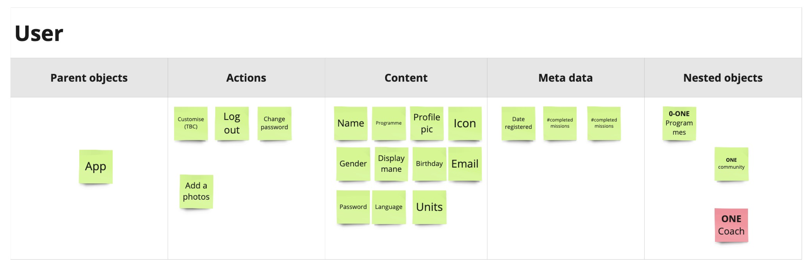
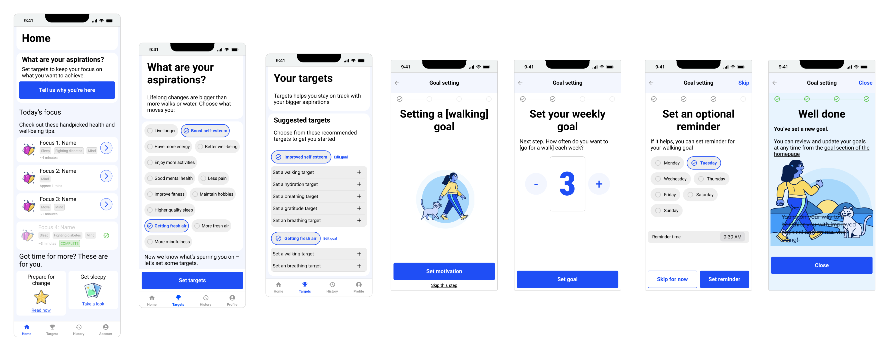

Client: Sidekick Health // Duration: 4 months
Sidekick Health is a digital health and therapeutics app on a mission to improve the health of humanity.
It provides a wide range of digital health programs to empower it's global user base to improve their health outcomes and quality of life.

Great to work with and really good/deep thinking around some of the problems we encountered.
User journeys and wire frames were good quality and made the design and development process much easier – recommended.


The client, Sidekick, was a very design-led organisation
They recognised they needed more UX/Product Design expertise to give their app better usability and IA. I was appointed as Product Design Principle to the newly formed Product team to help them with this.
Working closely with the Head of Product, and a couple of Product Managers, my initialremit was to lead the research and UX redesign of the Onboarding Journey and the Home Page.
I was contracted through an excellent creative agency called Wreel. They’d done a great job of selling in the high-level approach but correctly hadn’t specified much in terms of detail. This meant I was able to evaluate the landscape and propose the best approach for the client without being too constrained to what was in the proposal.
To make for easier reading, I've separated these out below (Onboarding Discovery and Homepage Discovery. In reality both these workstreams were delivered in parrallel.
Sidekick had grown quickly, and with a focus on visual design and brand.
As a result there was no existing documentation describing the existing user journeys like the onboarding journey
In order to make improvements I first needed to define what the current user journeys looked like.
From an initial analysis I knew it was approx 10 screens long, however there were multiple “branches” extending from each screen.
Additionally, some of the screens were conditionally shown depending on the state of upstream form field and authorisation (user permissions etc).
After discussing with the client and the team we agreed there was a clear need to establish this baseline via some journey maps
In addition to inform this particular project the (relatively new) Product Team saw how these journey maps would be useful in the future
Some detective work was required to piece this together from the app and various log-ins I was supplied with.

I chose this format rather than a conventional journey map, as we had an established product which people were familiar with. Abstracting these completed screens away to wireframes or an even more abstract journey map felt like it would be less useful that showing visuals of existing screens.
This was the case and these journey maps were highly praised by client and the agency as an effective way to communicate the user flow.
The onboarding journey ended at the homepage which was the second area Sidekick wanted me to improve.
I completed an initial UX audit to look for any obvious issues.
My UX reviews are a little broader than the 10 Usability Heuristics proposed by NN/g: As well as usability issues, I’ll also look at things like copy, design and brand which I believe all have an impact on the overall usability of the product.
I found many areas which might be problematic, then where possible I cross-reffed these with analytics data (Amplitude) to see if I could add any quant insights.
The overarching problem I found was that the homepage immediately presented the user with a bunch of visual and conceptual “objects” with little or no explanation for example;
The confusion around these objects was amplified the more digging I did - it became clear the relationship between each of these objects was notl well defined, for example.
Due to Sidekick’s success and rapid growth it turned out, no-one had had the time to define exactly how these objects related to each other.
I discussed, with the client and the agency. Both agreed the need to do some some additional work to clarify the relationship between all these objects, and to propose some standards.
In order to try and understand these relationships better I went back to the business and spoke to as many stakeholders as I could, to try to better understand these objects.
In order to understand this relationship better, I created a simple object map which outlined all the objects and their relationship to each other.
I played this back to stakeholders in the business and we managed to get some really clear agreement on most of what we had. It also threw up some really useful discussion. The client org really valued this as an opportunity to tighten up some of these things.
This object map took around a day to pull together and again was used as the foundation for a wider object map which the team created after I left.


OOUX
I based my object map on the work by Sophie Prater on OOUX. I think this is a really useful model to use, however I also find it to be too long-winded for a many of my clients. With that in mind I take the overarching principles the deliver a faster, more appropriate version for the projects I work on.
So by now I had
From this baseline I was in a good position to being making some changes going forward in terms of wire-framing.
The next step was to take all the learnings and propose improvements via some wireframes.
I used figma for this,, and created component based wireframes working closely with a visual designer and a copywriter.

The project also had a super talented copywriter on it who worked wonders on some of the wording.
My typical process when working with someone of this caliber is to put copu in the wireframes to convey the sentiment, but keep it very functional.
This way the copyright can review it and understand the underlying message - then craft some really engaging on-brand copy which conveys that message to the user.
Once completed I set up and ran all the user testing sessions we needed. We used an external agency to find candidates based on the personas Sidekick was trying to target.
Over a period of a week or so I ran 10 sessions, reviewed each session for notes, then did empathy mapping before pulling a report together from my findings.
Overall the wireframes we received much better than the original product, but we were still able to get some versy specific feedback to improve it further - I updated the wireframes to reflect this.
My role in the project was winding up at this point, but I made sure that I did a thorough handover with the designer who was responsible for aligning the user-tested wireframes to the Sidekick Brand.
I’d been in close discussion with the product manager and the development team all the way through so I organised a final session with them to make sure they had everything they needed.